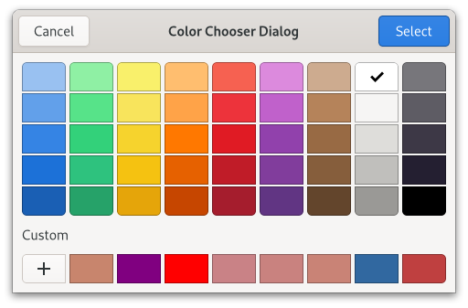

Gtk.ColorChooserDialog¶
Example¶
- Subclasses
None
Methods¶
- Inherited
Gtk.Dialog (11), Gtk.Window (61), Gtk.Widget (180), GObject.Object (37), Gtk.Accessible (15), Gtk.Buildable (1), Gtk.Native (6), Gtk.Root (3), Gtk.ColorChooser (5)
- Structs
class |
|
Virtual Methods¶
Properties¶
- Inherited
Gtk.Dialog (1), Gtk.Window (24), Gtk.Widget (34), Gtk.Accessible (1), Gtk.ColorChooser (2)
Name |
Type |
Flags |
Short Description |
|---|---|---|---|
r/w |
Signals¶
Fields¶
Class Details¶
- class Gtk.ColorChooserDialog(*args, **kwargs)¶
- Bases
- Abstract
No
A dialog for choosing a color.
An example
Gtk.ColorChooserDialogGtkColorChooserDialogimplements the [iface`Gtk`.ColorChooser] interface and does not provide much API of its own.To create a
GtkColorChooserDialog, use [ctor`Gtk`.ColorChooserDialog.new].To change the initially selected color, use [method`Gtk`.ColorChooser.set_rgba]. To get the selected color use [method`Gtk`.ColorChooser.get_rgba].
GtkColorChooserDialoghas been deprecated in favor of [class`Gtk`.ColorDialog].Deprecated since version 4.10: Use [class`Gtk`.ColorDialog] instead
- classmethod new(title, parent)[source]¶
- Parameters
parent (
Gtk.WindoworNone) – Transient parent of the dialog
- Returns
a new
GtkColorChooserDialog- Return type
Creates a new
GtkColorChooserDialog.Deprecated since version 4.10: Use [class`Gtk`.ColorDialog] instead